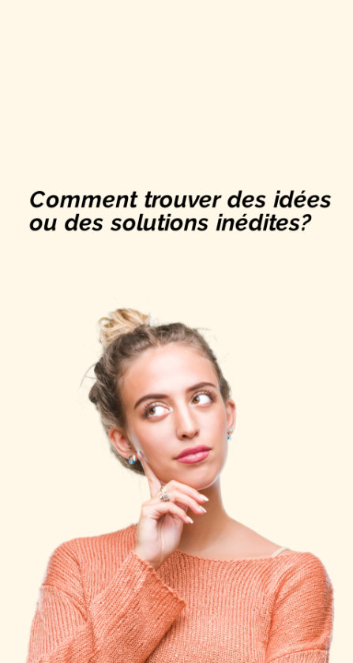
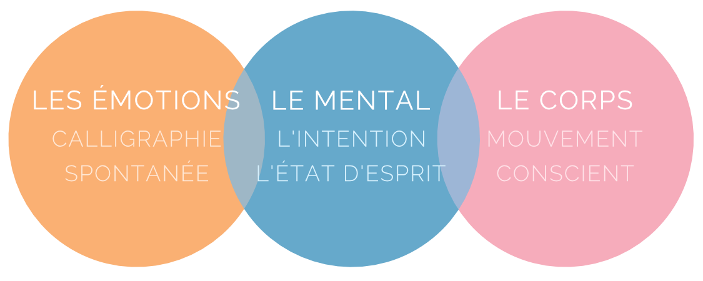
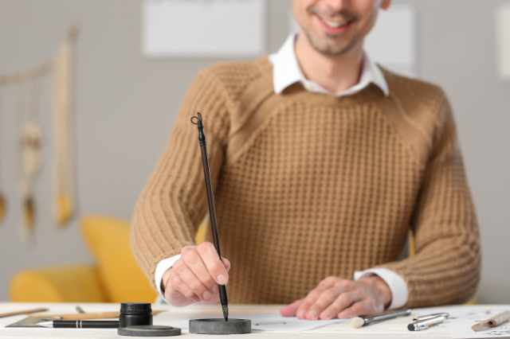
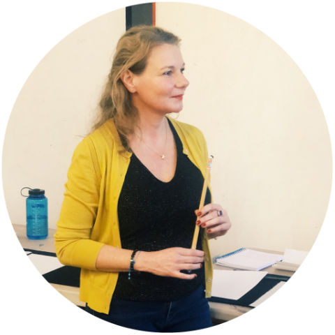

Respirer. Écouter. Créer.
Il est temps de faire une pause pour vous (re)connecter à votre créativité!
Découver nos ateliers expérientiels
créativité au quotidien
Comment se (re)connecter à sa pensée creative et en faire un atout professionnel au quotidien
 En savoir plus >
En savoir plus >
créativité et courage
Oser la créativité en période d'incertitude
En savoir plus >créativité et intuition
Comment concilier la tête et le coeur
En savoir plus >Wonderflow, c'est quoi
Des ateliers ludiques et originaux pour enforcer vote confiance créative dans vote milieu professionnel. Abordez la créativité différemment!
Découvrez notre méthode >Pour qui?
Les ateliers Wonderflow s'adressent à tout gestionnaire ou leader qui souhaite développer sa confiance créative.

Pour quoi?
Se (re)connecter à sa créativité
Apprendre des stratégies pour faire émerger de nouvelles idées et des solutions à vos problématiques
Repartir avec des outils pour faire de sa créativité un état d'esprit quotidien
L'originalité des ateliers Wonderfow
Les ateliers Wonderflow s'adressent à tout gestionnaire ou leader qui souhaite développer sa confiance créative.
Une expérience holistique et ludique
Qui fait appel au mental, mais aussi corps et à l'émotionnel pour ressentir sa créativite et enforcer sa confiance créative.
Tout cela dans la joie et la bonne humeur!
Tournés vers l'action pour des resultats
Vous repartez avec votre propre plan 'action pour installer la créativite dans vote quotidien professionnel
Un accompagnement post atelier pour un effet durable
Après l'atelier, un suivi en groupe (2 x 90 min en ligne) est assuré pour vous accompagner face aux défis possibles auquel vous faites face et vous encourager dans la mise en place de vote plan d'action.
Une approche introspective en movement originale et ludique
Cette approche s'appuient sur la connaissance des besoins actuels de l'entreprise, sur les découvertes de la neuroscience sur la créativité et des techniques de créativité éprouvées depuis des siècles.

respire
Ancrer le corps pour installer la présence avec des exercices de respiration et des movements simples de Taichi Qigone

ecoute
Pratiquer l'écoute intérieure et se connecter à ses resources réatives en exolorant la "calligraphie spontanée" à l'encre de Chine
crée
Adopter des attitudes et des comportments adaptés pour activer une posture créative au quotidien

un atelier wonderflow nest pas:
- Un cours de gymnastique chinoise
- Un cours d'expression artistique ou d'art thérapie
- Un cours de philosophie ou de spiritualité
- Une prise de tête!
Afin de favoriser l'ouverture et le retour vers soi. un nombre limité de professionnels (maximum 10 personnes) issus de diverses organisations et horizons, se retrouvent pendant 1 journée dans un lieu esthétique et inspirant, où règnent la bienveillance, l'ouverture d'esprit et le non-jugement.
Wonderflow, c'est...
Avant tout, un atelier Wonderflow est une expérience individuelle et non une activité de «team building»; c'est pourquoi ces ateliers sont inter-entreprises.
Ils favorisent la découverte de soi mais aussi des autres participants, jamais rencontrés, comme dans un voyage en terre inconnue!
Et si vous faisiez une "pause" Wonderflow?
Cette pause en movement va vous permettre une connexion avec vote espace intérieur. vote créativité, vous donner des clés pour un quotidien plus créatif, et qui sait... une prise de conscience, une meilleure connaissance de vous-même un déclic, un éclair de génie?

Le Contexte
Notre environnement de travail est en pleine mutation avec une demande croissante en agilité et résilience. La technologie est par ailleurs omniprésente et malgré tous ses avantages, elle peut être oppressante, voir influer sur la santé mentale sans compter les maintes autres influences extérieures.
Ces intrusions incessantes étouffent la conscience et bloquent le flow de la créativité.
La reconnexion à soi est essentielle. Elle favorise la créativité qui, par son épanouissement et son expression contribuera au futur de 'entreprise, et à créer du sens dans nos vies professionnelles.
Notre mission
Étre au service de la créativité individuelle
Notre approche se fonde sur la conviction que nous sommes tous créatifs mais que nous avons pu nous déconnecter ou perdre confiance en notre créativité avec le temps.
La créatrice et animatrice des ateliers Wonderfow
Vanessa Gerold
Après 20 ans d'expérience en Marketing et en Innovation, en Europe, aux Etats Unis et au Canada, jai réalisé que peu importe note industrie ou poste, nous avons tous des problématiques similaires dans notre milieu professionnel
Fascinée par le processus de création, j'ai toujours pratiqué une activité artistique dont le dessin. En quête d'équilibre et de sérénité, je me suis aussi plongée au fil des années dans divers domaines liés au développement personnel, la philosophie, la psychologie, la spiritualité, le bien être à travers de multiples séminaires, conférences, lectures, et cours. Le Tai- chi Qigong est une de mes passions que jaime enseigner.
Il me tient à cour aujourd'hui de partager les outils qui m'ont permis non seulement de proposer des solutions innovates au sein de mes emplois mais aussi de m'épanouir professionnellement.
